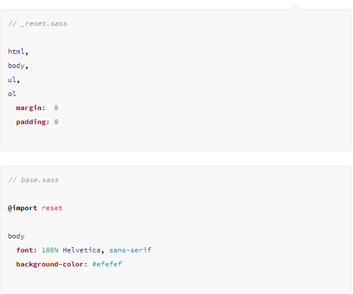

10 Things about SASS that will Blow any Programmers Mind
by BertPaulussen
1. SASS, you so Sassy!

SASS has tons of features, stays up-to-date and ahead of the curve and it's been worked on for over 10 years now. It's easily the most powerful, extensive and stable CSS extension on the planet. (Maybe even the whole solar system.)
2. Type Less, Do More

Everyone likes being lazy every once and a while. Even hardworking programmers. ESPECIALLY hardworking programmers. SASS uses very minimal syntax so fingercramps will no longer be the issue. Less typing, less thinking and most importantly, less chances to mess up.
3. Nesting

The CSS-hierarchry might be a bit confusing at times. If only it could be more clear like the one in HTML. It can? With SASS it can! Thanks to nesting you get a clear visual hierarchy.
4. Import all the stuff!

I hate copy/paste. You hate copy/paste. We all hate copy/paste. Just type "@import" and you can import entire .sass-pages without having to play keyboard-Twister with your fingers.
5. Mixing

Whoever said mixing is bad doesn't know what's good. Mixing is great! It's like tiny functions you can call upon to change a group of CSS declarations. Wodka Cola is pretty great as well by the way.
6. No More ;'s!

10.000 Words of code and you forgot a ;-symbol somewhere? Better start looking for the next 20 minutes. Oh, right. No need. We're using SASS!
7. @Extend to the max!

Not being able to use multiple classes can be a bother when coding CSS. But in SASS you can just extend classes with existing ones. Just use @extend and BAM! It's that easy!
8. Variables

Variables might be essential to code-languages like javascript. But now you can use them for your CSS as well. It's pretty damn handy, if you ask me.
9. Operators

What's 2 + 2 again? SASS, help me out. Now tell me what 600px / 960px * 100% is. Thank you, SASS.
10. More room for creativity

All of these crafty tools make it a lot easier to get the hard coding out of the way. Leaving you with lots more time for creativity. That's what CSS is meant for anyway, right? More time for... IMAGINATION!